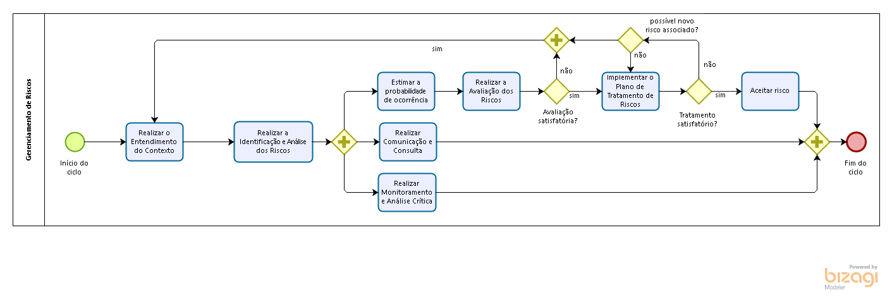

Integrantes do Projeto Integrador:
Alex Carlos,
Alexandre Silva,
Winder Rezende
Segundo a NBR ISO 9000:2005, "qualidade é o grau no qual um conjunto de características inerentes satisfaz aos requisitos". Ou seja, pode-se afirmar que se algum produto ou serviço atende aos requisitos especificados, este mesmo produto ou serviço possui a qualidade desejada.
A qualidade pode ser medida através do grau de satisfação em que as pessoas avaliam determinado produto ou serviço. No entanto, esse produto ou serviço pode ter qualidade para algumas pessoas e para outras nem tanto, ou seja, a qualidade é algo subjetivo.
● Risco
Risco é o efeito da incerteza nos objetivos ou a possibilidade de que um evento ocorra e afete, positivamente ou negativamente, os objetivos.
É importante destacar que problemas são diferentes de riscos. Quando identificados os problemas devem ser considerados como riscos concretizados. Essa análise considera o efeito da incerteza nos objetivos, ou seja, causas e consequências de eventos futuros e incertos. Assim, o foco não é tratar ou resolver problemas diretamente, mas, caso seja identificado que existe a possibilidade de um evento ocorrer novamente, o evento futuro poderá ser tratado como risco.
● Gestão De Riscos
De acordo com a norma ABNT ISSO 31000, a gestão de riscos é definida como “atividades coordenadas para dirigir e controlar uma organização no que se refere a riscos”. Basicamente é o conjunto de ações direcionadas ao desenvolvimento, disseminação e implantação de metodologias de gerenciamento de riscos institucionais, objetivando apoiar a melhoria contínua de processos de trabalho, projetos e a alocação e utilização eficaz dos recursos disponíveis.
De acordo com a norma ABNT ISSO 31000, a gestão de riscos é definida como “atividades coordenadas para dirigir e controlar uma organização no que se refere a riscos”. Basicamente é o conjunto de ações direcionadas ao desenvolvimento, disseminação e implantação de metodologias de gerenciamento de riscos institucionais, objetivando apoiar a melhoria contínua de processos de trabalho, projetos e a alocação e utilização eficaz dos recursos disponíveis.
● Identificação e avaliação dos Ativos
Um ativo é qualquer informação que tem valor para a organização, onde um incidente por causar prejuízos como perda de confidencialidade, integridade ou disponibilidade. Os ativos podem ser definidos como:
● Informação lógica;
● Informação física;
● Hardware;
● Software;
● Ambiente físico.
E devem ser avaliados determinando o impacto do ativo para a organização considerando parâmetros como custo de reparo, de reposição e tempo previsto de parada por exemplo, determinando uma escala da gravidade do impacto, onde a pontuação 4 é o mais alto nível crítico e 0 para nulo.
● Fluxograma
● Realizar o Entendimento do Contexto
Avalia o contexto proposto para a análise de riscos a ser executada a fim de entender o propósito da avaliação de riscos a ser realizada.
● Realizar a Identificação e Análise dos Riscos
Atividade que consiste na identificação de ameaças, vulnerabilidades e dos controles de já implementados.
● Realizar a Avaliação dos Riscos
Atividade que consiste na avaliação e proposição de tratamento para os riscos identificados.
● Implementar o Plano de Tratamento de Riscos
Atividade que compreende a elaboração de plano visando à definição das formas de tratamento dos riscos e de implantação de controles, dos responsáveis por sua implementação e prazos estabelecidos.
● Comunicar risco e monitorá-lo
Nessas atividades, é feito a comunicação do risco às partes interessadas e efetua em paralelo o monitoramento dos riscos já avaliados, a fim de evitar que eles se concretizem.